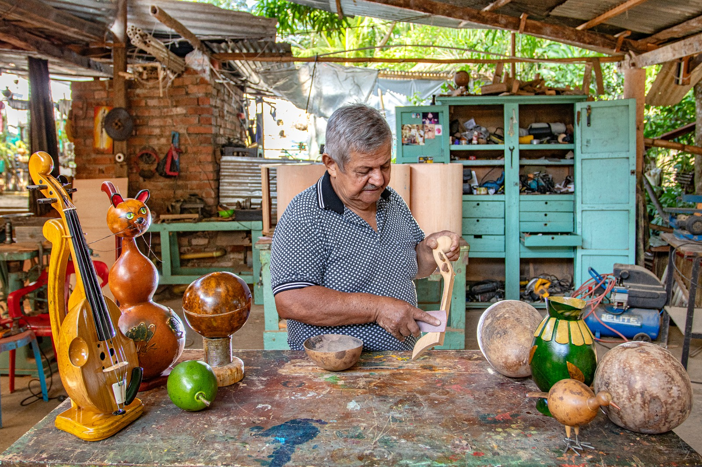
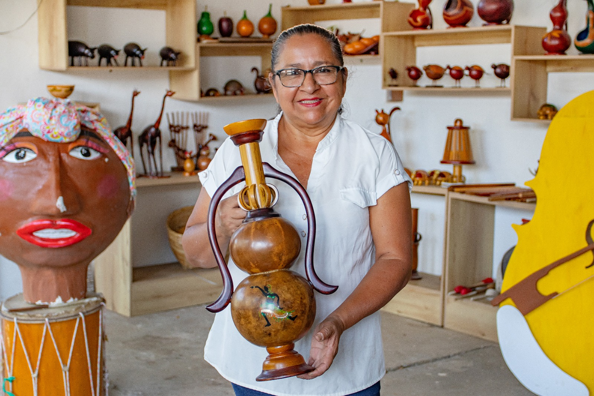
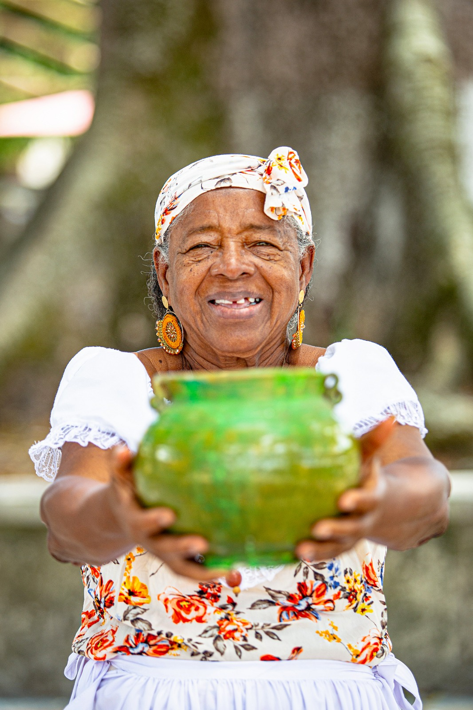
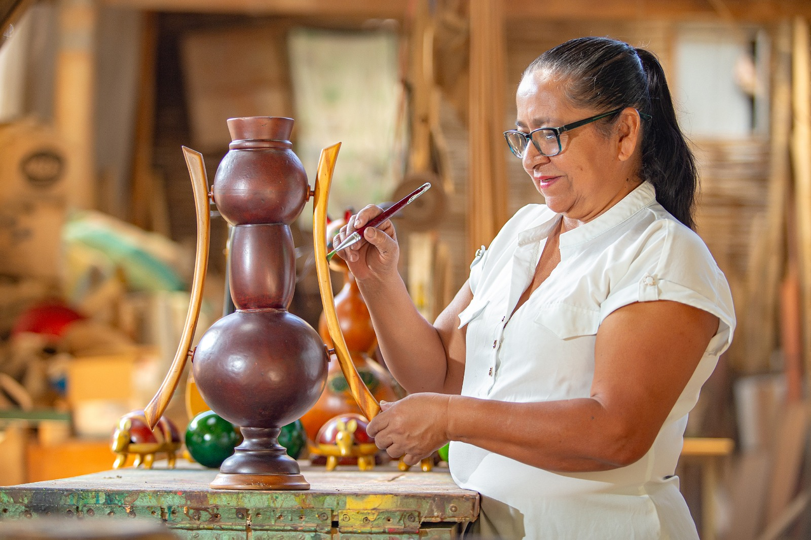
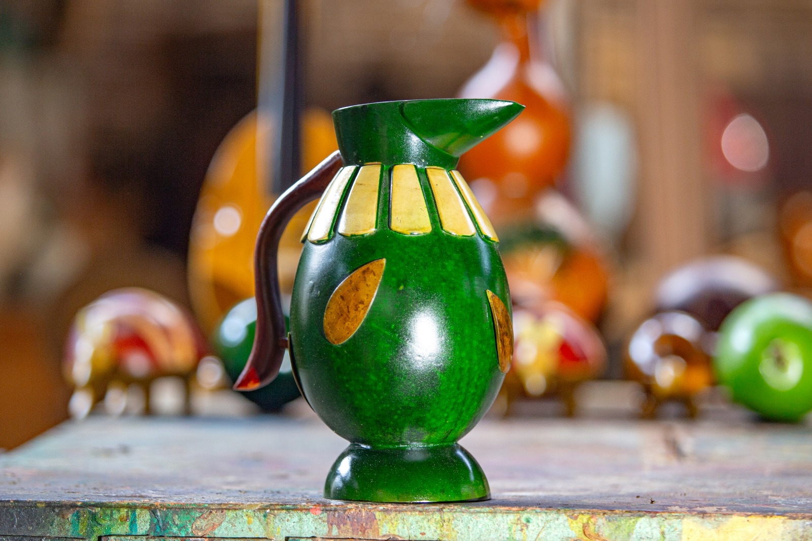
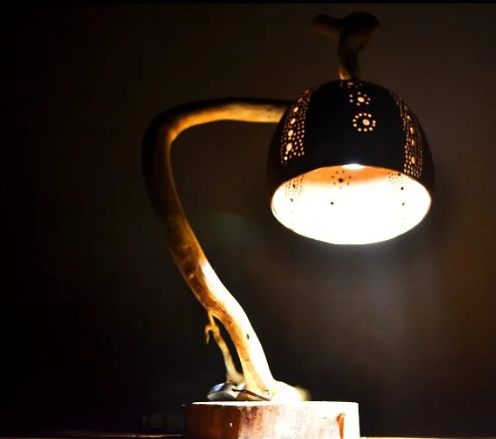

La belleza de lo hecho a mano.
Hay materiales que guardan una historia y manos capaces de transformarlos en objetos únicos. Descubre el universo artesanal del totumo y las expresiones creativas que forman parte de la identidad cultural de Patía.
Explorar la artesanía ↓
De la naturaleza a una pieza artesanal.
El totumo es el punto de encuentro de esta experiencia. Sus formas permiten crear recipientes, objetos decorativos y piezas que muestran distintas maneras de trabajar con un material natural.
Cada fotografía ofrece una mirada diferente: las personas que trabajan el material, los objetos terminados, la iluminación y los accesorios que amplían sus posibilidades creativas.

Detrás de cada pieza hay una historia.
La artesanía se descubre también a través de las personas que trabajan el material y de los espacios donde toman forma los objetos.
Esta fotografía nos acerca al entorno artesanal y a la variedad de piezas que pueden encontrarse en el taller.

Una forma natural, nuevas posibilidades.
Antes de convertirse en un objeto, el totumo forma parte del paisaje. Su forma y su estructura permiten imaginar diferentes posibilidades de creación.
La imagen pone en primer plano el material y a la persona que lo presenta, conectando el oficio artesanal con quienes lo mantienen vivo.

El valor está también en el proceso.
Observar el trabajo artesanal permite apreciar los detalles, las formas y la dedicación que intervienen en la elaboración de una pieza.
Más que mostrar un objeto terminado, esta mirada destaca el trabajo que hay detrás de su apariencia.
Objetos que conservan la esencia del material.
Los recipientes permiten apreciar cómo las formas del totumo se convierten en objetos decorativos y funcionales. Sus tonos y acabados dan personalidad a cada pieza.


Conocer el material cambia la manera de mirar la pieza.
El acercamiento al totumo permite observar su interior, su estructura y las características naturales que forman parte de su transformación artesanal.

Cuando la luz dibuja nuevas formas.
Las perforaciones y los diseños de estas lámparas producen juegos de luz y sombra que transforman el ambiente.
Cada composición revela una forma diferente de combinar el material, la iluminación y el diseño decorativo.
Explorar la colección de lámparas y accesorios →Un universo de formas, luz y color.
Explora esta selección de fotografías y elige la imagen que quieras observar.
Patía tiene muchas historias por descubrir.
La artesanía es una puerta de entrada a la cultura del territorio. Continúa descubriendo sus expresiones musicales y sus lugares de interés con Rumbo.